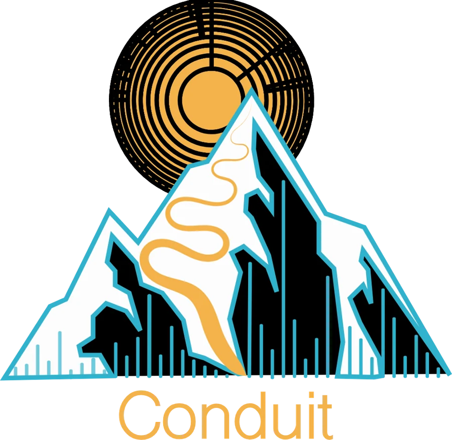
Conduit
Raw spectra from a microbial community in; who’s there and what they’re doing out. Named after climbing. I drew all the logos.
“I may not have gone where I intended to go, but I think I have ended up where I needed to be.”
Douglas Adams, The Long Dark Tea-Time of the Soul
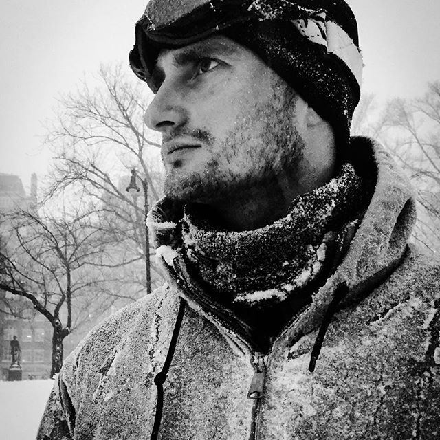
I’m a PhD candidate in Biomedical Sciences at UC San Diego, in the Gonzalez Lab. Most of my work sits where mass spectrometry meets microbiology: measuring the proteins made by microbes and the people they live in, then writing the software that lets other scientists do the same.
Before that I spent five years at Kaleido Biosciences outside Boston, building high-throughput screens for microbiome therapeutics, and a year at UVA studying Chlamydia. I studied biochemistry at Dickinson College, where a biology class had me collecting roadkill.
Outside the lab I run, ski, backpack and ride bikes, and talk friends into adventures that need some convincing.
Where mass spectrometry meets microbiology: what microbes, and the people they infect, are up to, plus the software to find out.

Raw spectra from a microbial community in; who’s there and what they’re doing out. Named after climbing. I drew all the logos.
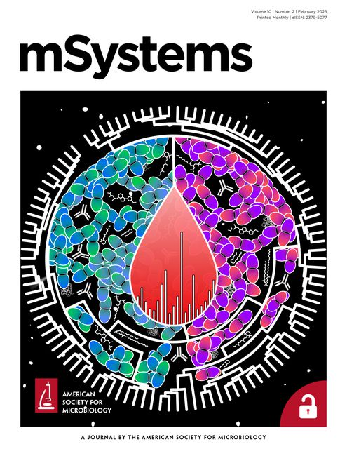
Proteomics and metabolomics of 105 patients with Enterococcus bacteremia. I drew the cover, too.
Side projects: a lamp, some drawings, 3D prints and a computer.
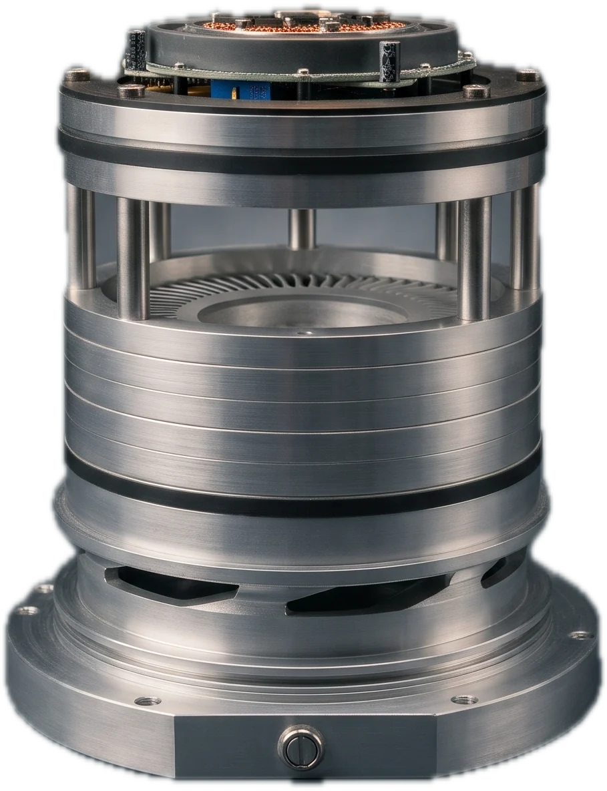
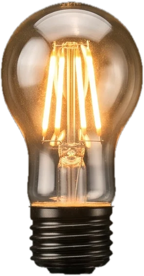
Mostly true. Lightly edited.
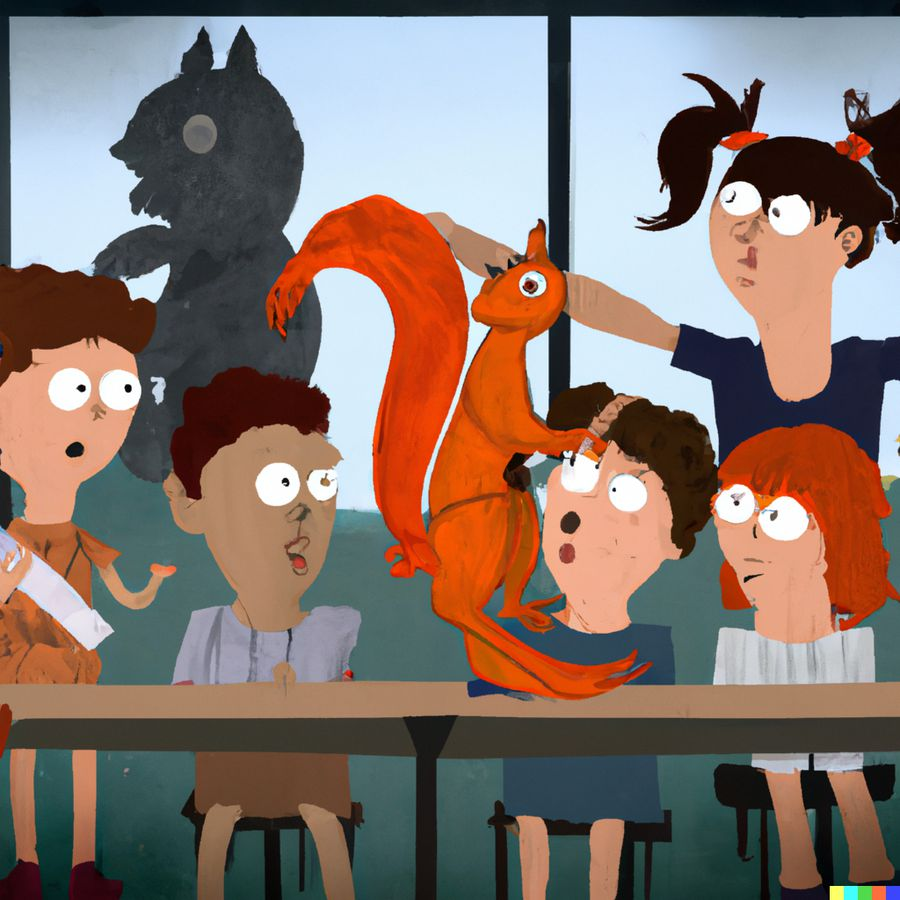
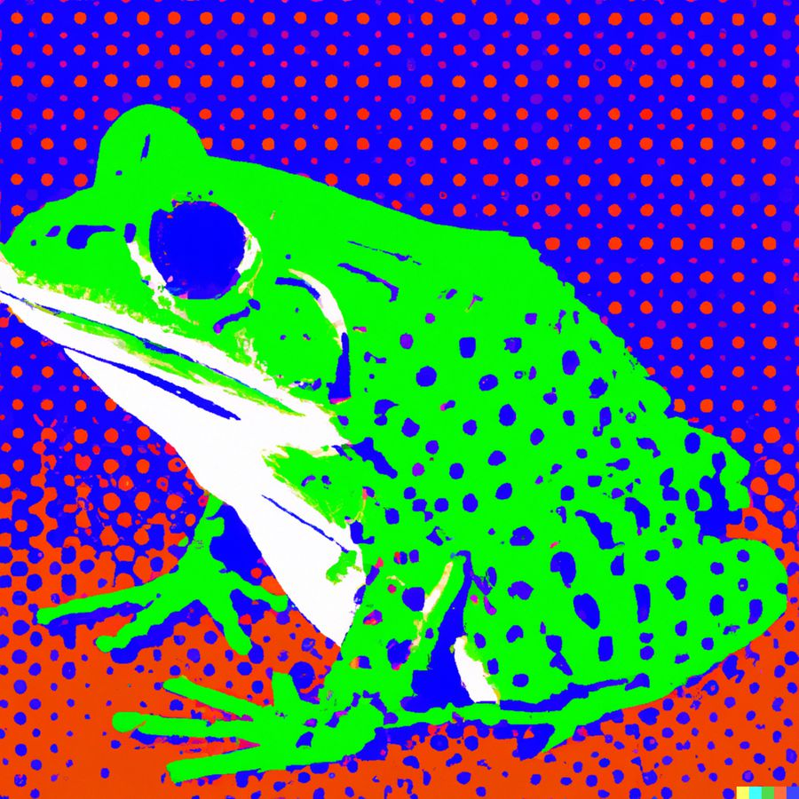

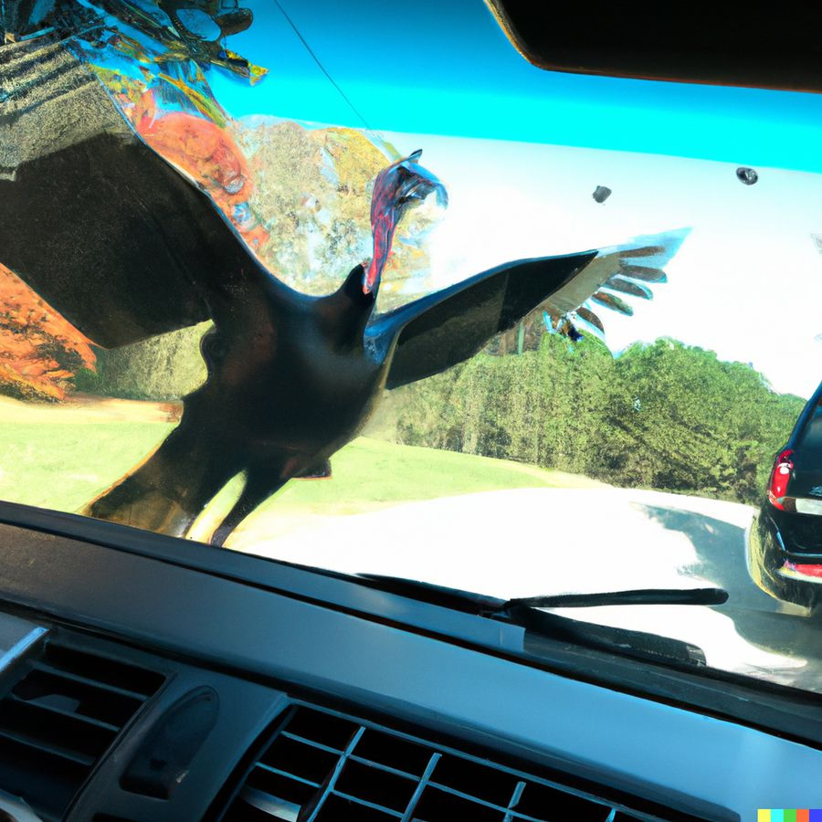
Half my grade in one college biology class came from turning roadkill into taxidermy. It cost me a car.
Mountains, deserts, and the occasional drone flight.
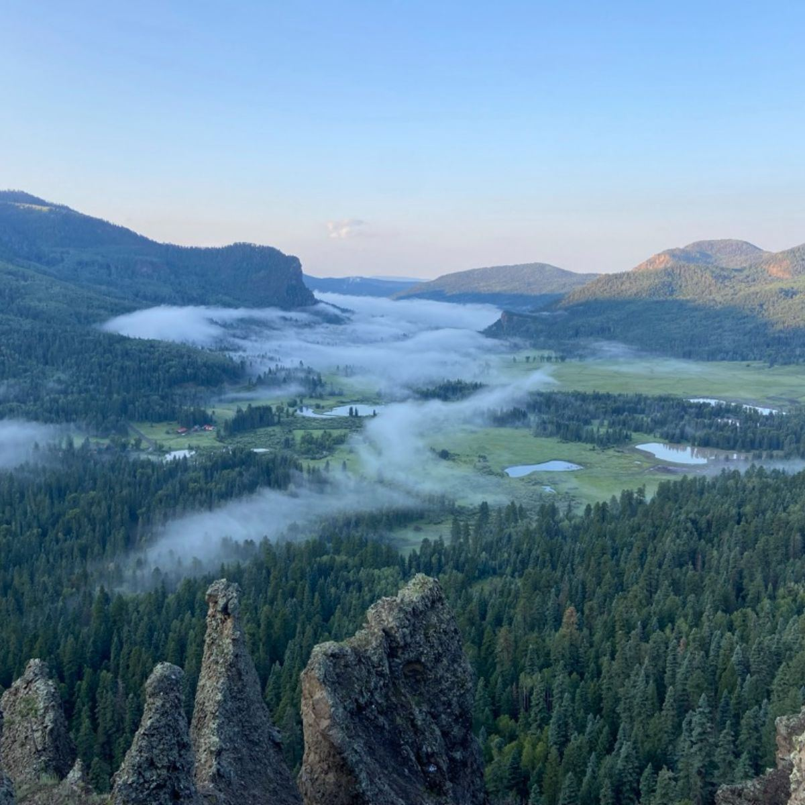
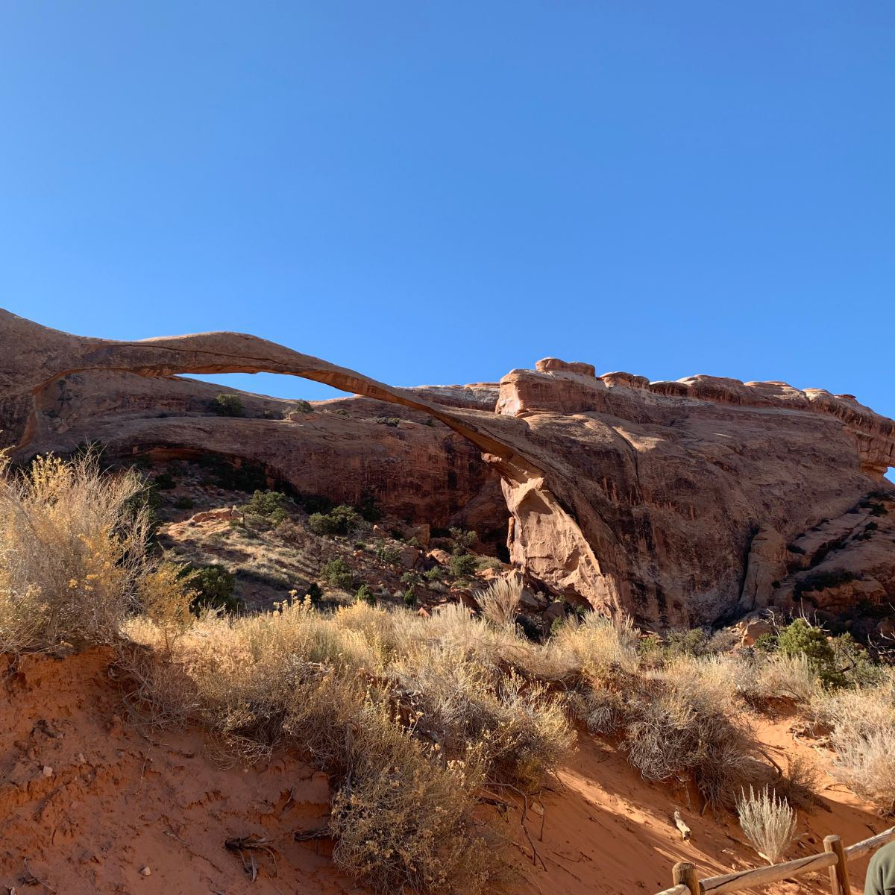
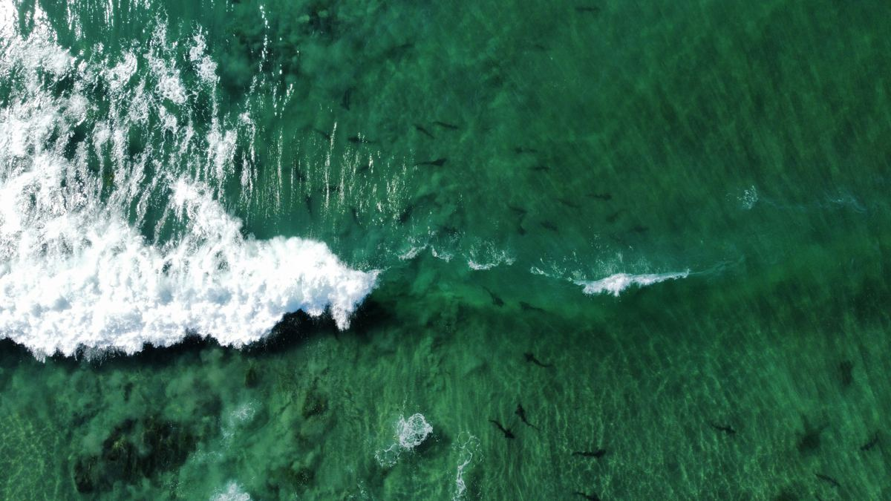
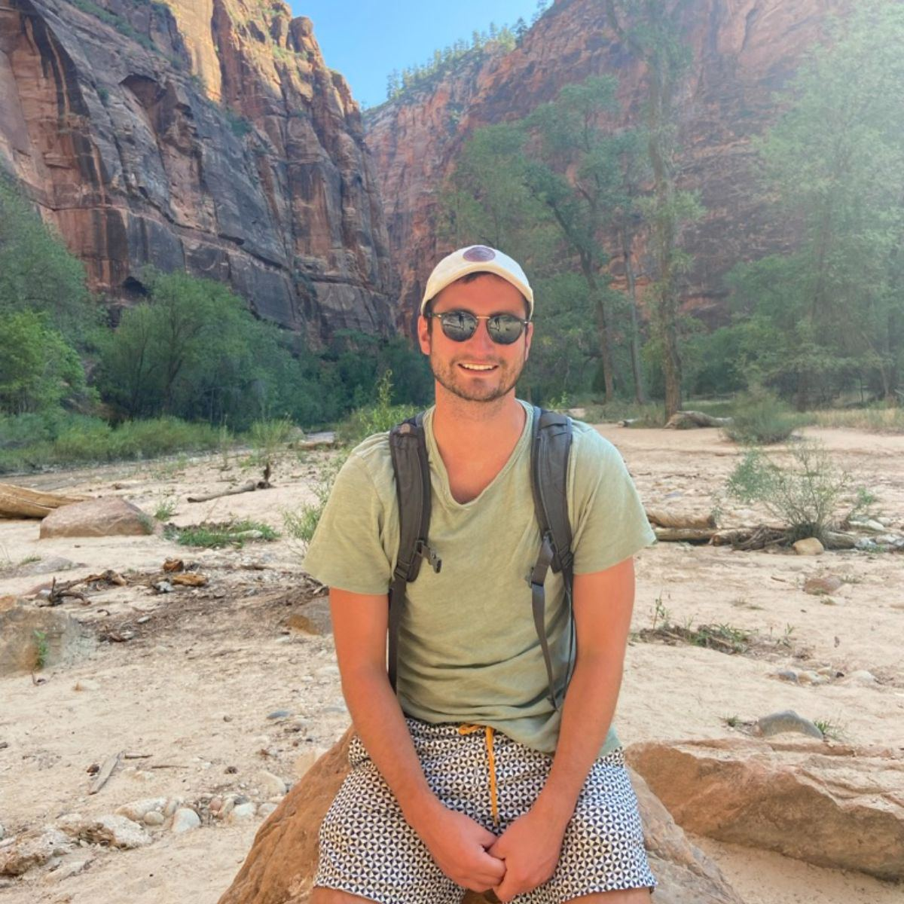
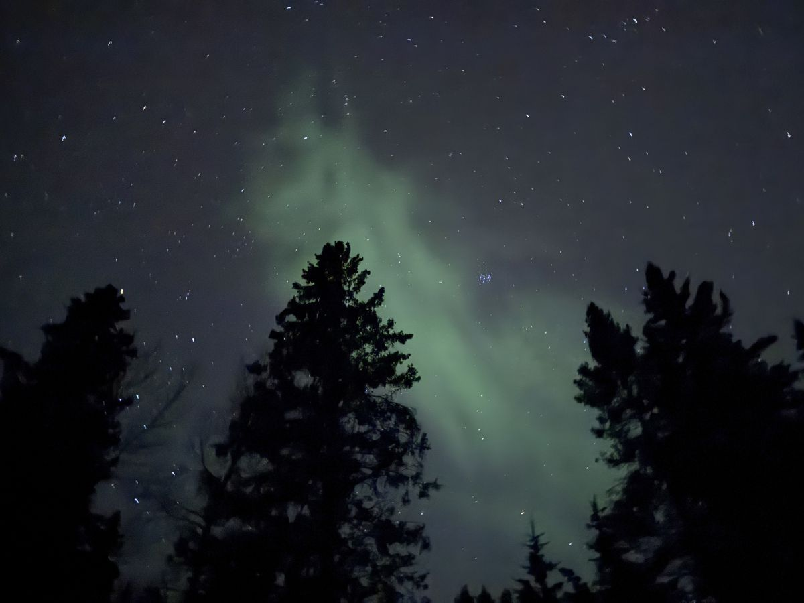